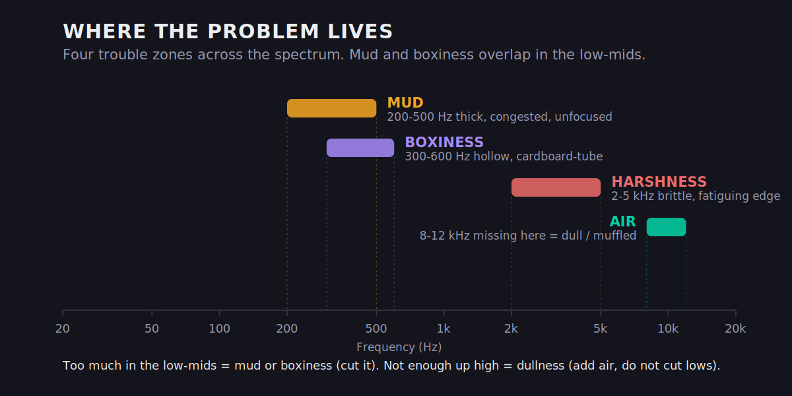
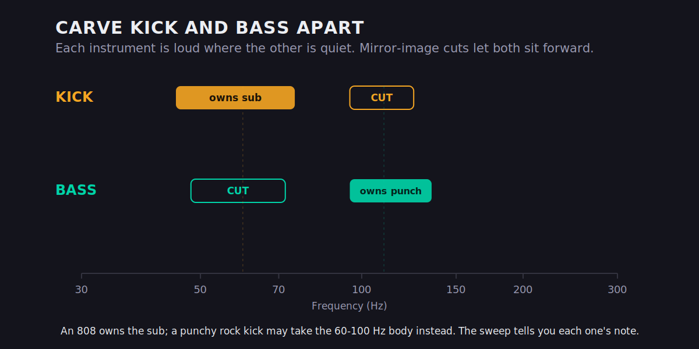
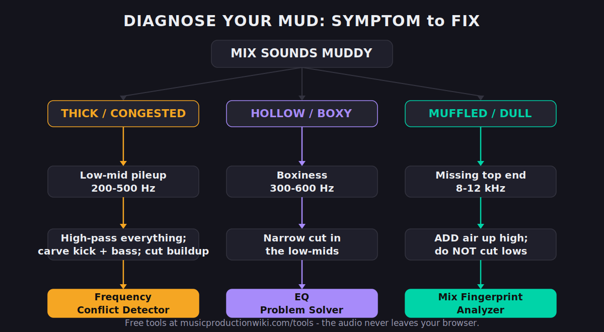

You bounce the mix, play it next to a track you love, and the difference is immediate and demoralizing: yours sounds like it’s playing through a blanket. Thick. Cloudy. Muddy. The good news is that mud is not a mystery and it is not a talent problem — it is a diagnosable frequency problem, almost always living in a narrow band of the low-mids where too many sounds are fighting for the same space. This page is a diagnostic, not a lecture: we’ll find exactly where your mud is coming from, name the eight things that cause it, and give you the precise move that fixes each one. By the end you’ll know whether you have mud, boxiness, or dullness — three different problems people lump together — and how to clear it without gutting the warmth that makes a mix feel good.
Here’s the mechanism in one sentence, because understanding it makes every fix below obvious: the low-mids are crowded by physics, not by accident. The fundamental notes of bass instruments, the body of guitars and pianos, the chest resonance of vocals, the boom of toms, and the natural tone of any room all live in the same one-octave band roughly between 200 and 500 Hz. Each sound contributes a modest amount of energy there; the trouble is that a full arrangement has eight or ten sources contributing at once, and energy adds up. What sounds fine on a soloed track becomes congestion when everything plays together, because the band that was comfortably full on one instrument is now overloaded by six. That’s why mud is almost never a problem you can hear by soloing — it only exists in the sum, and it only gets fixed in the sum.
A mix sounds muddy when too much energy piles up in the low-mids, roughly 200–500 Hz — the region where kick, bass, low guitars, keys, vocal body, and room tone all overlap. The fastest fix is subtractive: high-pass everything that isn’t bass, then carve a small dip somewhere in 200–400 Hz on the worst offenders rather than boosting the highs to compensate. If it’s muffled rather than thick, that’s a different problem (missing top end), and if it boxes up around 300–600 Hz, that’s boxiness. Diagnose which one you have first — the fixes point in opposite directions.
The 30-Second Diagnosis: Find Your Mud Before You Touch Anything
Before you reach for a single plugin, you need to know where the problem is, and you can find it in under a minute with one move every engineer uses. Open an EQ on your master bus (or on the busiest element), create a narrow bell with a few dB of boost, and slowly sweep it through the low-mids — from about 150 Hz up to 600 Hz. As you sweep, the frequency that makes the mix sound worse — thicker, more congested, more “honky” — is your mud. Mark it. That single number is the difference between guessing and fixing: instead of vaguely scooping mids, you now know the exact region to address.
Do the same sweep on the individual tracks, not just the master, because mud is usually the sum of several elements each contributing a little, not one obvious villain. The kick might be smearing 250 Hz, the rhythm guitar piling into 300 Hz, and the vocal carrying unnecessary body at 200 Hz — none of them awful alone, but stacked they turn to soup. A free spectrum analyzer makes this visual: a healthy mix tends to slope gently downward from lows to highs, and a muddy one shows a fat bulge sitting in the 200–500 Hz range that crowds everything above it. If you want a fuller primer on reading frequency content, our guide to the frequency spectrum walks through what each band actually does for a sound.
Two details make the sweep accurate. First, use a narrow bell — a high-Q boost — so you isolate a precise frequency rather than a vague region; a wide boost makes everything sound bad and tells you nothing. Second, sweep slowly and trust the moment the mix turns ugly, not the moment it gets louder. Any boost makes things louder; you’re listening for the specific quality of congestion, the point where the mix stops sounding bigger and starts sounding choked. When you find it, don’t leave the boost there — that was a diagnostic tool. Flip the bell to a cut of 2–4 dB at that exact frequency and listen to the mix open up. The whole discipline of clearing mud is that flip: you find the problem by boosting and you solve it by cutting.
One discipline before you start cutting: reference. Pull up a commercially released track in a similar genre, match its loudness roughly to yours, and A/B them. Mud is often a relative judgment — your mix only sounds muddy compared to something cleaner, and the reference tells you how much low-mid energy is normal for your style. Trap and doom metal carry far more low-mid weight than acoustic pop, and chasing a generic “clean” target can leave a heavy genre sounding thin and lifeless.
Make the A/B specific rather than vague. Loop a dense section of each — a full chorus, not an intro — and switch between them on the same loud-then-quiet passage so your ears aren’t fooled by a level difference. Listen for one thing at a time: is the reference’s bass tighter, its vocal clearer of the instruments around it, its low-mids more open? Where your mix feels thicker on the same passage, that’s your gap, and it points you straight at the band and the elements to address. A reference doesn’t tell you what to do, but it ends the argument about whether there’s a problem at all — and it stops you from over-correcting a mix that was actually fine for its genre.
Mud, Boxiness, or Dullness? Three Problems People Confuse
“Muddy” gets used as a catch-all for anything that isn’t crisp, but three distinct defects hide under that word, and they have opposite fixes. Confusing them is why people cut where they should boost and make the mix worse. Here’s how to tell them apart and where each one lives.

Mud is excess energy in the low-mids, roughly 200–500 Hz. It makes the mix sound thick, congested, and unfocused — like the instruments are blurred together rather than each occupying its own space. The fix is subtractive: cut the buildup. Boxiness sits a touch higher, around 300–600 Hz, and has a hollow, cardboard-tube quality — common on close-miked sources and small rooms. It’s also a cut, usually a narrower one. Dullness (or “muffled”) is the reverse of mud entirely: it’s a lack of high-frequency energy, missing presence (2–5 kHz) and air (8–12 kHz). If your mix sounds like it’s behind a curtain rather than too thick, cutting low-mids won’t help — you need to add top, not remove bottom. And a fourth cousin worth naming: harshness, the brittle, fatiguing edge in the 2–5 kHz region, which is its own problem with its own fixes. The test is simple: if the mix is too much in the low-mids, you have mud or boxiness; if it’s not enough up high, you have dullness. Sweep, decide, then act — never reach for the same move blind.
If you’re still unsure which one you’re hearing, run two quick confirmations. To test for dullness, add a gentle high-shelf boost above 8 kHz: if the mix suddenly sounds clear and present, the problem was missing top, not excess bottom, and you should chase air rather than cut lows. To test for mud, do the opposite — pull a wide 3–4 dB cut around 250–350 Hz: if the congestion lifts and the mix opens up, it was genuinely a low-mid pileup. The two tests point in opposite directions on purpose, and one of them will obviously be right. Doing both takes thirty seconds and saves you from the single most common mixing mistake: treating a dull mix as a muddy one and cutting away the last of its warmth.
The 8 Causes of a Muddy Mix — and the Exact Fix for Each
Mud isn’t one thing; it’s a handful of common habits that each dump energy into the low-mids. Here are the eight that account for almost every muddy mix, each with the specific move that clears it. Most muddy mixes are guilty of three or four of these at once.
1. Too many sources competing in the low-mids
Every instrument with a body — guitars, keys, pads, vocals, toms — carries energy in the 200–500 Hz range, and when six of them sound at once, that energy stacks. No single track is wrong; the pile is. Picture a dense chorus: rhythm guitar, a doubled rhythm guitar, a piano, a pad, a lead vocal, and two backing vocals, all with natural body around 250–350 Hz. Each is contributing a perfectly reasonable amount, but seven reasonable amounts equal one unreasonable wall. The fix is subtractive EQ on the offenders: a gentle 2–4 dB dip in the muddiest part of the low-mids on the supporting parts, leaving the lead element (often the vocal) to own that band. You’re not making any one track sound better in solo — you’re making room. Decide who needs the low-mids (usually the lead) and thin everyone else there. Our mixing EQ guide covers the subtractive-first philosophy in depth.
2. No high-pass discipline
Almost every element that isn’t the bass or kick has rumble and low-mid weight it doesn’t need. A hi-hat doesn’t need anything below 300 Hz; a vocal rarely needs much below 90–120 Hz; an acoustic guitar strummed in a busy mix doesn’t need its boomy body competing with the bass. Left in, that energy is pure mud with no upside — it’s the low-frequency content the microphone captured (handling noise, room rumble, proximity boom) that contributes nothing to the note you actually want. The fix is a high-pass filter on every non-bass track, set just below the lowest note that element actually needs. This alone clears more mud than any other single move, because it’s the one fix you apply to the most tracks at once — more on exactly how far below in its own section.
3. Kick and bass not carved apart
The kick and the bass both occupy the bottom, and if they’re both full-range in the same place, they mask each other and turn the low end to mush. This is the highest-leverage fix in the whole list: complementary EQ — let one own the sub (say the kick at 60 Hz) and the other own the punch (the bass at 100–120 Hz) by cutting each where the other lives. Add sidechain or dynamic EQ to duck the bass momentarily when the kick hits. Full walkthrough below, plus our dedicated guide to EQ’ing bass.
4. Over-reverb and over-layering filling the gaps
Reverb and delay are low-mid generators in disguise — pile on long reverbs and doubled parts and you fill every gap in the frequency spectrum with wash, which reads as mud and as distance. A reverb tail is a smeared, sustained copy of everything you sent to it, including all that low-mid body, spread across time so it never quite clears. Three vocal doubles plus a long plate plus a quarter-note delay means the 250 Hz region is now occupied continuously instead of just on the notes. The fix: high-pass your reverb returns (cut everything below ~300 Hz on the reverb itself so it adds space without adding bottom), shorten decay times, and commit to fewer layers. A mix with three deliberate parts beats one with twelve smeared ones. Our guide to creating depth in a mix shows how to get space without wash.
5. Mono bass you never checked
If your low end has stereo width — from a stereo synth bass, wide doubling, or heavy stereo reverb on low elements — it can phase-cancel and sound flabby and undefined, especially on club systems and phone speakers that sum to mono. Two slightly out-of-phase copies of a bass note partially cancel, which robs it of weight and definition and leaves a vague thickness in its place. The fix is to collapse the lows to mono below roughly 100–150 Hz using a utility or mono-maker, which tightens and focuses the bottom instantly and guarantees the bass survives mono playback intact.
6. The room and monitors are lying to you
If your room has a bass buildup or your headphones are hyped in the low-mids, you’ll under-mix the lows to compensate and the mix will sound muddy everywhere else. This is a perception problem, not a mix problem, and EQ can’t fix it. The fix is to check in mono, check on multiple systems, and treat your room — covered in its own section below.
7. Poor gain staging
When every track runs hot into the red, plugins distort, the master bus compressor clamps down on the loudest moments, and the whole mix smears together — a subtle, low-grade mud that no EQ move fully clears. Many analog-modeled plugins also add harmonic content as they’re driven harder, and that content piles into the mids; feed them a signal that’s too hot and you’re manufacturing congestion inside the plugin chain before EQ ever gets a say. The fix is upstream: set healthy levels (peaks around −6 to −3 dBFS on the master, plenty of headroom on each channel) so nothing is being squashed into congestion before you even start EQ’ing. Clean gain staging is mud prevention; no corrective EQ recovers a mix that was smeared on the way in.
8. Everything boosted, nothing cut
The most common beginner habit: hearing a track sound “better” in solo with a low-mid boost, doing it on every track, and ending up with a mix where everything is boosted in the same place. Boosts add energy; ten boosts in the low-mids add ten times the mud. The fix is a mindset: cut to fix, boost to flavor. When something sounds buried, your first instinct should be to cut the thing covering it, not boost the thing that’s buried.
Carving Kick and Bass Apart: The Highest-Leverage Fix
If you fix only one thing, fix this. The kick drum and the bass guitar (or 808) are the two heaviest elements in almost every modern mix, and they live in the same neighborhood. When both are full-range and unmanaged, they mask each other — the ear can’t separate them, the low end loses definition, and you get that pumping, undefined thickness that no amount of high-passing the guitars will cure. The solution is to deliberately assign each one a lane.

The technique is complementary (or mirror) EQ. Decide who owns the sub-bass. If the kick is the foundation (common in hip-hop and electronic), let it keep 50–70 Hz and cut the bass slightly in that same region; then let the bass own its fundamental and punch around 100–120 Hz and dip the kick a little there. Each instrument is loud where the other is quiet, so both can sit forward without piling up. Use your sweep to find each one’s strongest note rather than copying numbers blindly — an 808 and a rock kick want very different splits.
Then add movement with sidechain compression or dynamic EQ. Set the bass to duck a couple of dB precisely when the kick hits — not the obvious pumping of an EDM sidechain, just enough to let the kick’s transient punch through cleanly before the bass returns. Dynamic EQ does the same thing surgically: a band on the bass that only attenuates when the kick triggers it. Either way, the two stop colliding. If you want to see exactly where two elements are masking each other, our multiband compression guide and the Frequency Conflict Detector tool (below) both make the overlap visible, so you’re cutting with evidence instead of guesswork.
Whatever split you choose, verify it in mono. Two low-end elements that sound separated in stereo can still collide when the signal sums — and mono is where club PAs, laptop speakers, and most phones actually live. If the kick and bass stay distinct and punchy collapsed to mono, the carve is real; if they smear back together, either your cuts weren’t deep enough or you’re fighting a phase problem rather than a frequency one. Make this check before you move on to anything else, because every later decision in the mix sits on top of the low end. Get the foundation muddy and no amount of careful work above it will sound clean.
A few realities to respect while you do this. An 808 and a rock kick demand opposite splits: an 808 is the sub, so you usually let it own 40–70 Hz and keep the kick’s weight a little higher as a clicky transient on top, whereas a punchy rock kick often wants the 60–100 Hz body and the bass guitar sits beneath and around it. There’s no universal number — the sweep tells you each one’s strongest note, and the split follows from that. Also resist the urge to fix a kick/bass collision by simply turning one down; that trades mud for a weak low end. The goal is for both to be present and loud while occupying different frequencies, not for one to retreat. This single relationship — kick and bass, carved — is responsible for more “suddenly the mix opened up” moments than anything else in mixing.
High-Pass Discipline: The Move That Clears the Most Mud
If carving kick and bass is the highest-leverage single fix, high-passing is the highest-volume one — the move you apply across the most tracks for the most cumulative cleanup. The principle: almost everything that isn’t the bass or kick has low-frequency content it doesn’t use musically, and that content is pure mud. Stripping it costs you nothing audible and clears enormous space.
The discipline is in where you set the filter. The mistake is high-passing everything to the same frequency (say a blanket 100 Hz), which thins out elements that needed their lows. Instead, set each filter just below the lowest note that element actually plays. A male vocal might high-pass around 90–110 Hz; a female vocal a bit higher; an electric guitar around 80–100 Hz; a hi-hat or shaker can go up to 300–500 Hz with zero loss because it has no useful low end at all. The way to find the right spot is to high-pass while listening in the full mix and bring the filter up until you hear the element start to lose body, then back off slightly. You want the highest filter that doesn’t thin the sound.
Don’t forget the parts people leave full-range out of habit: reverb and delay returns (high-pass them at 250–400 Hz so the wash stops muddying the bottom), overheads and room mics (which capture a lot of low rumble), and synth pads (which are often deceptively low). Each one is a small win, but high-passing is a numbers game: clear a little mud from fifteen tracks and the whole mix lifts. For vocals specifically, where body and mud sit right next to each other, our guide to EQ’ing vocals covers exactly how to keep warmth while cutting the congestion, and the same logic applies when you EQ drums, where overheads and toms are common low-mid offenders.
One refinement that separates a clean high-pass from a clumsy one: watch the slope and the resonance at the cutoff. A gentle 12 dB-per-octave slope sounds natural and preserves a little warmth just above the filter; a steep 24 or 48 dB slope removes low end more aggressively but can sound abrupt and, on some filters, adds a resonant bump right at the cutoff that ironically creates a small mud peak. If you’re high-passing a vocal or guitar where warmth matters, favor the gentler slope and a non-resonant filter; save the steep slopes for tracks with genuinely useless low end like cymbals and reverb returns. And never high-pass the kick or bass to clear mud — their lows are the point; muddiness down there is a carving and mono problem, not a filtering one.
When the Room Is Lying to You
Here is the uncomfortable truth that derails more home mixes than any EQ mistake: you can only mix what you can hear, and most untreated rooms and consumer headphones do not tell you the truth about the low-mids. A small room builds up bass in the corners and creates nulls where certain frequencies disappear depending on where you sit. If your listening position happens to sit in a 200 Hz buildup, you’ll hear too much there, cut it, and your mix will sound thin everywhere else. If it sits in a null, you’ll hear too little, boost it, and your mix will sound muddy on every other system. The mud isn’t in the mix — it’s in the room.
You can’t EQ your way out of this, but you can work around it. Check in mono — collapsing to mono reveals phase issues and low-mid buildup that stereo hides, and a mix that sounds clear and balanced in mono almost always translates. Our guide to mixing in mono explains why this one habit catches mud that monitoring can’t. Check on multiple systems: your monitors, cheap earbuds, a phone speaker, the car. If it’s muddy on three of them, it’s the mix; if it’s muddy on one, that’s that system’s coloration. And over the longer term, treat the room — even basic bass trapping in the corners dramatically tightens what you hear in the low-mids, which is exactly where mud lives. Our walkthrough on home studio acoustic treatment covers the cheap, high-impact moves first. Mixing in a lying room is like painting in tinted glasses: the work can be technically careful and still come out wrong, because the information going in was false.
The specific culprit is room modes — standing waves that form between parallel walls at frequencies related to the room’s dimensions, piling up energy at some spots and cancelling it at others. In a typical small bedroom those modes land squarely in the bass and low-mids, which is why home mixes so often get the low end wrong. Two free habits help before you spend a cent on treatment: pull your desk and chair slightly off the exact center of the room and away from the rear wall (modal buildup is worst at the boundaries), and don’t mix at one fixed volume — the low-mids read very differently quiet versus loud, and checking at a low level often exposes mud that a loud, exciting playback masks.
Fix It in the Arrangement, Not the EQ
The most overlooked cause of mud isn’t a mixing mistake at all — it’s an arrangement that asks too many instruments to occupy the same space at the same time. No amount of EQ fully rescues an arrangement where the piano, two guitars, a pad, and the bass are all playing thick chords in the same low-mid octave. They will mask each other no matter how surgically you carve, because the information is genuinely overlapping. The cleanest mixes are often the ones with the fewest things happening at once, and the fastest way out of mud is sometimes to mute a part rather than EQ it.
Think in terms of frequency real estate when you arrange and produce, not just when you mix. Give each element its own register: if the bass is busy in the low-mids, voice the keys higher; if two guitars are doubling, pan them wide and let one take the low body while the other lives up in the high-mids; spread chords across octaves so the notes aren’t all stacked in the muddy zone. Mono-compatible, frequency-aware arrangement does half the de-mudding before you open a single EQ. When you find yourself fighting the same 300 Hz buildup on five tracks, that’s the arrangement telling you it has five things doing the same job — and the real fix is to have fewer of them, played in different ranges, rather than to keep carving holes in each one until they all sound thin.
A concrete example: a verse has a piano playing full chords, a synth pad, and a low electric guitar, all sitting in roughly the same two octaves. No EQ truly separates them, because they’re genuinely playing the same notes in the same range — you’d have to gut all three to make room, and then none of them has any body left. The arrangement fix is to give each a different job: the piano takes a high, rhythmic voicing; the pad thins to a single sustained note an octave up; the guitar either sits out the verse or moves to a higher inversion. Now there’s nothing to carve, because nothing is overlapping. That is the difference between fixing mud and preventing it — and the prevented kind never costs you a thing in tone.
What to Fix First: The Order of Operations
Mud-clearing goes wrong most often not because someone picks the wrong move but because they pick the right moves in the wrong order — boosting the highs before cutting the lows, or chasing a 300 Hz buildup across ten tracks that a single high-pass pass would have thinned for free. Work top-down through the chain and each step makes the next one easier to judge. First, gain-stage so nothing is smearing on the way in. Second, high-pass every non-bass track to its lowest useful note — this clears the broad fog and lets you hear what’s actually competing. Third, carve the kick and bass apart, because the bottom is the foundation and a tight low end makes everything above it read clearer. Fourth, cut the remaining low-mid buildup on the worst offenders found by sweep, leaving the lead element its body. Fifth, manage reverb and width — high-pass the returns, collapse the lows to mono. Then check in mono and against your references and decide whether you’ve gone too far.
The order matters because each step removes a variable, so the next decision is made against a cleaner picture. Cut a 300 Hz buildup before high-passing and you’re carving against a fog you could have lifted for nothing; add air before clearing the low-mids and you’re just making a congested mix brighter. And resist the temptation to fix it all on the master bus at the very end — by then the mud is baked into the sum, and the only honest fix is to go back to the individual tracks. A muddy master is almost always a tracks problem wearing a master-bus disguise.
Diagnose Your Mix, Not a Generic One
Everything above is the map. The last step is to find your mud specifically — the exact frequency, the exact offending tracks — because a generic “cut 300 Hz” is a starting guess, not a diagnosis. This is where the right tool turns an hour of sweeping into a few seconds of seeing.

Run your mix (or a problem stem) through the Frequency Conflict Detector to see which two elements are masking each other in the low-mids — it turns the “kick and bass are fighting” hunch into a precise picture of where and how much. Use the EQ Problem Solver to translate a symptom (“boxy,” “muddy,” “harsh”) into the specific band and move that fixes it. And drop the full mix into the Mix Fingerprint Analyzer for a complete read on your tonal balance against genre-calibrated targets — it flags the section and the band where your mix departs from a clean reference, so you know whether your low-mids really are heavy or whether your ears (or your room) were lying. The audio never leaves your browser; you just get the diagnosis.
The point of all of it is the same: stop guessing. Mud feels like a vague, overwhelming “something’s wrong,” but it resolves into a small number of specific, fixable causes the moment you look at it with the right tool. When you can name the frequency and the offenders, the fix is almost mechanical — and the mix that sounded like a blanket starts to sound like a record.
Before You Touch the EQ: 3 Drills
Run these in order. Each one builds the listening skill that lets you fix mud by ear instead of by recipe.
- Put a narrow EQ bell with +6 dB of gain on your busiest mix.
- Slowly sweep it from 150 Hz to 600 Hz and stop where the mix sounds worst — thicker, honkier, more congested.
- Write down that frequency. That is your mud, and now you know exactly where to cut instead of guessing.
- Go through every track that isn’t the kick or bass and add a high-pass filter.
- On each, raise the filter while listening in the full mix until the element starts to lose body, then back off a touch.
- Bypass all the filters at once and toggle. The cleaned-up version should sound noticeably more open — that gap is the mud you just removed.
- Solo the kick and bass together and sweep each to find its strongest fundamental.
- Cut each instrument a few dB where the other one’s fundamental lives (mirror EQ), then add light sidechain or dynamic EQ so the bass ducks when the kick hits.
- Un-solo and check in mono. If the low end is now tight and you can hear both elements distinctly, you’ve fixed the single biggest source of mud in most mixes.
Frequently Asked Questions
Mud lives in the low-mids, roughly 200–500 Hz, where the body of most instruments overlaps. Boxiness sits slightly higher around 300–600 Hz. The exact frequency varies by mix, which is why you sweep a narrow EQ boost through that range to find your specific buildup rather than cutting a fixed number. Don’t confuse it with dullness, which is a lack of high end (8–12 kHz), not an excess of lows.
Mostly EQ — mud is excess energy in the low-mids, and subtractive EQ is the direct fix. But compression contributes when kick and bass collide (sidechain or dynamic EQ helps there) and when poor gain staging drives the master compressor to smear the mix. Fix the frequency buildup first with EQ and high-passing; reach for dynamics only for the kick/bass relationship and overall glue.
Usually the reverse of what people expect: your headphones are likely flattering the low-mids or under-representing them, so you’re mixing to a false reference. Phone speakers expose midrange congestion mercilessly because they have almost no real low end — if it’s muddy there, the low-mids are genuinely crowded. Always check across several systems, and check in mono, before trusting any one of them.
A limiter raises everything toward the ceiling, which brings up the quiet low-mid energy that was sitting harmlessly underneath — so latent mud becomes audible mud. It also reduces dynamic range, gluing transients into the sustained content. The fix is to clean the low-mids before the limiter (high-pass, carve kick and bass, cut buildup) so there’s less mud to amplify, and to limit more gently. If you only hear mud after limiting, your mix had it the whole time.
Just below the lowest note the element actually uses — not a blanket number. Raise the filter while listening in the full mix until the sound starts to thin, then back off slightly. Vocals often land around 90–120 Hz, electric guitars 80–100 Hz, hi-hats and cymbals 300–500 Hz, and reverb returns 250–400 Hz. Leave the kick and bass alone — they need their lows.
Cut. Mud is too much energy, so removing it is the direct solution, and subtractive EQ keeps the mix natural. Boosting the highs to “balance out” the mud just makes the mix louder and harsher without removing the congestion underneath. The rule of thumb: cut to fix a problem, boost only to add character once the problem is gone.
Boomy is lower — an excess down in the 60–150 Hz bass region that makes the low end sound loose and overpowering. Muddy is higher, in the 200–500 Hz low-mids, and reads as congested rather than boomy. Boomy is often a kick/bass level or room problem; muddy is usually too many mid-heavy elements stacking. Diagnose with a sweep so you fix the right band.
A dynamic resonance suppressor like oeksound’s soothe (currently soothe 3, around $259 as of June 2026 — verify current pricing) can tame resonant buildups and harshness intelligently, and it’s excellent on stubborn problem sources. But it’s a finisher, not a substitute for the fundamentals: high-passing, carving kick and bass, and cutting buildup do the heavy lifting for free. See our soothe 3 review and our roundup of the best EQ plugins for where a paid specialist earns its place. Fix the structure first; reach for the smart tool for what’s left.
Commercial mixes are aggressively carved — every element is high-passed, the kick and bass are deliberately separated, and the low-mids are kept clear so the mix translates everywhere. They also benefit from treated rooms and reference checking. The gap is rarely gear; it’s discipline in the low-mids. A/B against a reference at matched loudness to see exactly how much low-mid energy is normal for your genre, then cut toward it.
Yes — it’s one of the most effective mud-catching habits there is. Mono collapses the stereo field, which exposes phase cancellation and low-mid buildup that the width of a stereo image hides. If a mix is clear and balanced in mono, it almost always translates well in stereo. Mixing the core balance in mono and only opening up the width at the end keeps the low-mids honest from the start.
You over-cut, or you cut on too many tracks at once. The low-mids carry warmth and body as well as mud — the goal is to remove the excess, not gut the region. Make smaller cuts (2–4 dB), cut on the supporting parts while leaving the lead element its body, and reference a commercial track so you don’t chase a sterile, scooped sound that’s wrong for your genre. Thin and muddy are both failures; the target is in between.